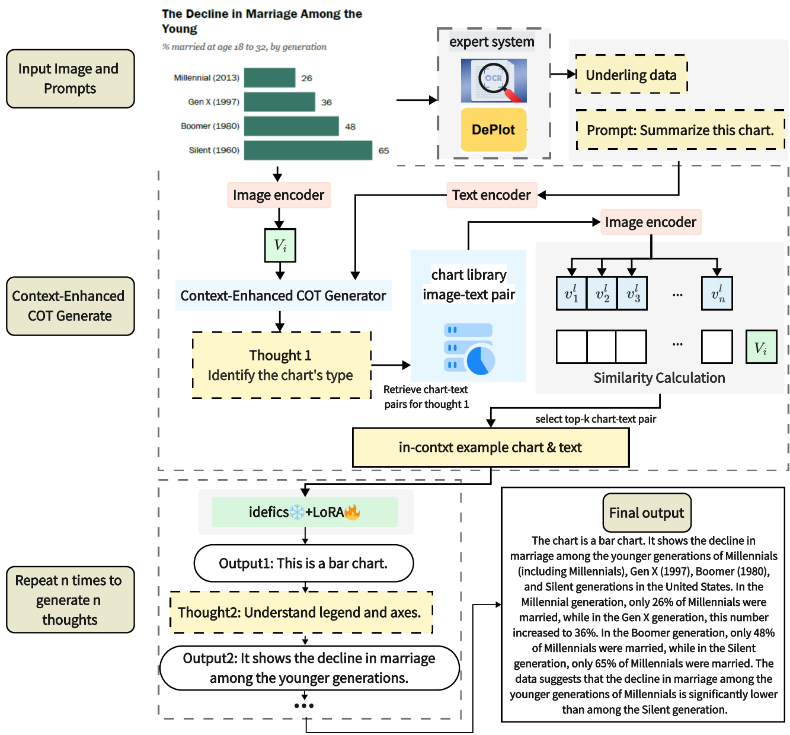
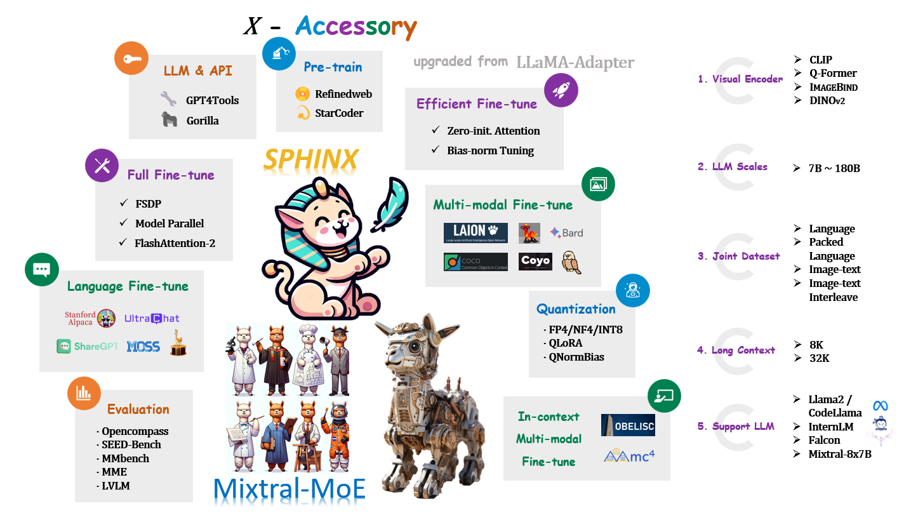
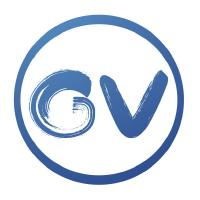

Guian Fang
I am a Ph.D. student at Show Lab, National University of Singapore, advised by Prof. Mike Zheng Shou.
Previously, I received my B.Eng. in HCPLab, Artificial Intelligence at the School of Intelligent Systems Engineering, Sun Yat-sen University, advised by Xiaodan Liang (梁小丹), co-supervised by Shengcai Liao.
Additionally, I was a research scientist at Cybever AI in Sunnyvale, where I cooperated with a small team that mostly works on 3D computer vision and Large language model.

{kind=link}
Research
I'm interested in computer vision, deep learning, generative AI, and AI alignment. Most of my research will be about video understanding and generation. Representative papers are highlighted.
|
Generate 3D Worlds in Production with AI
Cybever*, Guian Fang* Image-to-3D: Let AI do the heavy lifting so 3D Professionals can do the storytelling |

|
|
HumanRefiner: Benchmarking Abnormal Human Generation and Refining with Coarse-to-fine Pose-Reversible Guidance
Guian Fang*, Wenbiao Yan*, Yuanfan Guo*, Jianhua Han, Zutao Jiang, Hang Xu, Shengcai Liao, Xiaodan Liang ECCV, 2024 Dataset page / Paper In this project, we introduce AbHuman, the first large-scale benchmark focused on anatomical anomalies. The benchmark consists of 56K synthesized human images, each annotated with 147K human anomalies in 18 different categories. Based on this, we developed HumanRefiner, a novel plug-and-play method for coarse-to-fine refinement of human anomalies. |
|  |
ChartThinker: A Contextual Chain-of-Thought Approach to Optimized Chart Summarization
Mengsha Liu, Daoyuan Chen, Yaliang Li, Guian Fang, Ying Shen LREC-Coling, 2024 Dataset page / Paper In this project, we address the challenges of chart summarization through our development of ChartThinker, an innovative method that leverages natural language processing to enhance visual-language matching and reasoning capabilities. Our approach involves a large-scale dataset featuring diverse chart-caption pairs and detailed fine-tuning instructions, significantly improving training data effectiveness. ChartThinker employs thought chains and context retrieval strategies to produce logically coherent and accurate summaries. Demonstrating superior performance, our model outperforms eight state-of-the-art models across seven evaluation metrics. |
|  |
LLaMA2-Accessory: An Open-source Toolkit for LLM Development
Chris Liu, Ziyi Lin, Guian Fang, Jiaming Han, Yijiang Liu, Renrui Zhang, Longtian Qiu, Yichi Zhang, Siyuan Huang 
Checkpoint page / Document LLaMA2-Accessory is an open-source toolkit for pretraining, finetuning and deployment of Large Language Models (LLMs) and multimodal LLMs. This repo is mainly inherited from LLaMA-Adapter with more advanced features. |
Honors & Awards
- 2nd Place, Asia and Pacific Mathematical Contest in Modeling (2022)
- Silver Medal, China Collegiate Algorithm Design & Programming Challenge Contest (2022)
- 2nd Place, Social Computing Innovation Competition (2022)
- 1st Place, National College Computer Ability Challenge (2023)
- Recipient, Huawei Intelligent Foundation Scholarship (2022)
- Recipient, National Encouragement scholarship (2022)
- 1st Place, SYSU Outstanding Student Scholarship (2023)
- Recipient, National Scholarship (2023)
- Recipient, Li Xuerou Foundation Scholarship (2023)
Activities & Services
- Reviewer for ECCV
- Reviewer for NeurIPS
- Reviewer for ICLR
- Reviewer for ICML
- Reviewer for AISTATS
- Core organizer of LOVEU: LOng-form VidEo Understanding Towards Multimodal AI Assistant and Copilot Workshop @ CVPR'24
Acknowledgements
I feel incredibly fortunate to have collaborated with such remarkable individuals who have generously offered me their mentorship.
|  |